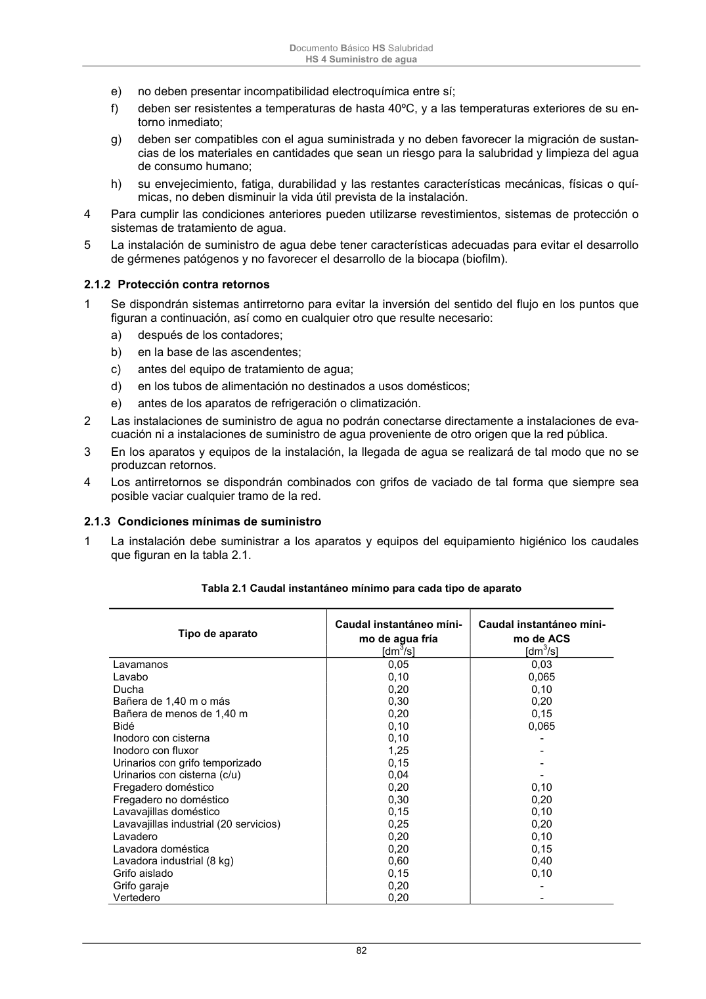

DB-HS · 2.1.2 Protección contra retornos · versión 2022-06-14 · capa oficial
Formatos: JSON compacto · Markdown · PDF fuente
Ámbito del documento · texto del ámbito · documento y tablas
ID técnico a0175 · PDF pág. 82 · jerarquía no validada por persona · contrastado con el literal de la página 82 (candidato tipográfico); no validado por persona · padre: raíz
2.1.2 Protección contra retornos 1 Se dispondrán sistemas antirretorno para evitar la inversión del sentido del flujo en los puntos que figuran a continuación, así como en cualquier otro que resulte necesario: a) después de los contadores; b) en la base de las ascendentes; c) antes del equipo de tratamiento de agua; d) en los tubos de alimentación no destinados a usos domésticos; e) antes de los aparatos de refrigeración o climatización. 2 Las instalaciones de suministro de agua no podrán conectarse directamente a instalaciones de eva- cuación ni a instalaciones de suministro de agua proveniente de otro origen que la red pública. 3 En los aparatos y equipos de la instalación, la llegada de agua se realizará de tal modo que no se produzcan retornos. 4 Los antirretornos se dispondrán combinados con grifos de vaciado de tal forma que siempre sea posible vaciar cualquier tramo de la red.

PDF fuente redistribuible: copia fiel enlazada en esta página (SHA256 verificado).